These are newly authored, unscaled vector design aids. They are NOT generated knitting patterns, calibrated schematics or actual 3D geometry. In the finished application, measured geometry should generate the shapes.
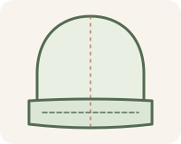
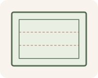
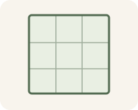
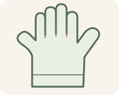
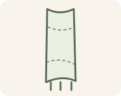
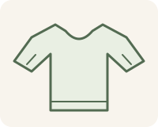
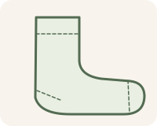
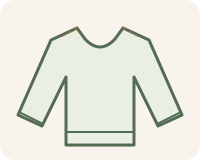
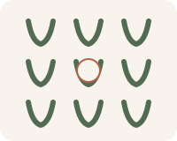
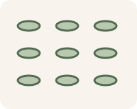
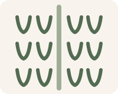
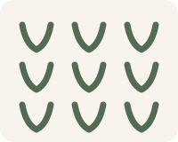
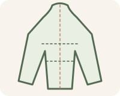
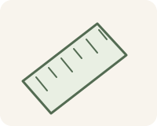
See docs/ASSET_GUIDE.md for usage and provenance.